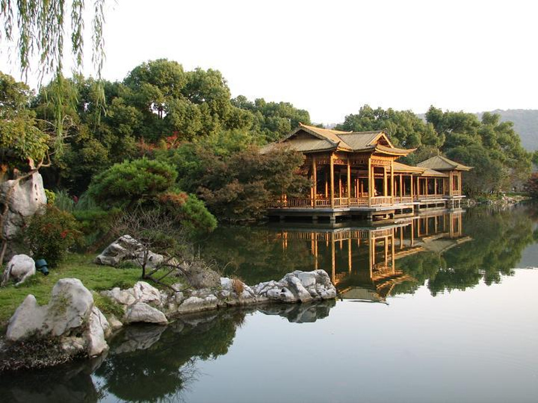
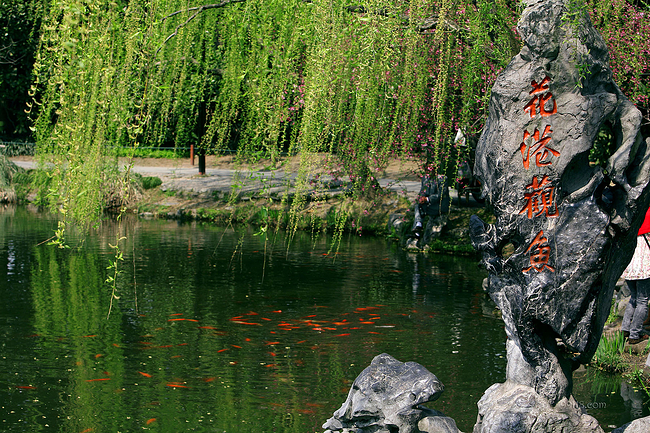
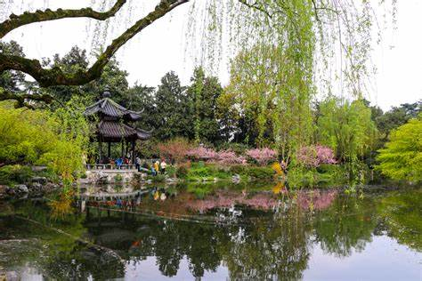
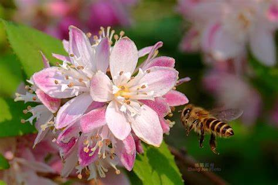
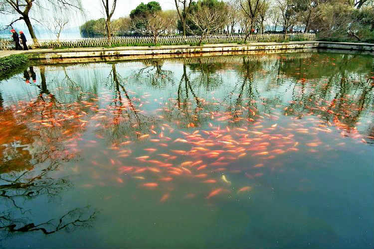

花港观鱼是由花、港、鱼为特色的风景点。西湖十景之一。地处苏堤南段西侧。1964年二期扩建工程告竣后，占地面积达20公顷。全园分为红鱼池、 牡丹园、花港、大草坪、密林地五个景区。与雷峰塔、净慈寺隔苏堤相望。
红鱼池位于园中部偏南处，是全园游赏的中心区域。池岸曲折自然，池中堆土成岛，池上架设曲桥，倚桥栏俯看，数千尾金鳞红鱼结队往来，泼刺戏水。
花港观鱼地处苏堤的南段西侧。是承佛光紫气而幽静的植物园林。花溪蓄卢园.花港前依接山势葱茏的南屏山，西靠层峦叠翠的西山，平静如镜的小南 湖和西里湖，如青玉分列左右。而公园就在在西里湖与小南湖之间的半岛上面。
花港观鱼地处西湖西南，三面临水，一面倚山。是一个占地300余亩的大型公园。西山大麦岭后的花家山麓，有一条清溪流经此处注入西湖，故称 花港。南宋时，内侍卢允升在花家山下建造别墅，称“卢园”，园内栽花养鱼，池水清冽、景物奇秀。以后，卢园荒废，此景亦衰。清康熙南巡时， 在苏堤映波桥和锁澜桥之间的定香寺故址上，重新砌池养鱼，筑亭建园，勒石立碑，题有“花港观鱼”四字。
南宋时有一条小溪从花家山经此流入西湖，这条小溪就叫花溪。当时，内侍官卢允升在花溪侧畔建了一座山野茅舍，称为“卢园”。园内架梁为舍， 叠石为山，凿地为池，立埠为港，畜养异色鱼类，广植草木。因景色恬静，游人萃集，雅士题咏，被称为“花港观鱼”。花港观鱼公园位于苏堤南段 以西，在西里湖与小南湖之间的一块半岛上。时称卢园又以地近临花家山而名“花港”。期间宫廷画师创作西湖十景组画时将它列入其中，由此而名 声远扬。古时这里只有一池、一碑、三亩地。后经扩建，全园面积近三百亩。今日的花港观鱼是一座占地二十余公顷的大型公园，微风过处，沿池 岸花木落英缤纷，飘浮于水面，好一幅“花著鱼身鱼嘬花”的动人画图，无人不起羡鱼之情。
康熙三十八年，玄烨驾临西湖，题书花港观鱼，刻石碑建于鱼池畔。后来乾隆下江南游西湖时，又有诗作题刻于碑阴。碑分为阳文和阴文双面，是 康熙和乾隆祖孙两个皇帝分别题的字，这在我国碑林史中仅此一块。乾隆做诗有：“花家山下流花港，花著鱼身鱼嘬花”之语。
花港观鱼的石碑是乾隆皇帝下江南时所题，其中的“鱼”字，繁体写法是四点，代表火，乾隆改为三点，代表水，寓意百姓生活风调雨顺，江山稳固 太平。还有种说法：“花港观鱼”四字为清康熙皇帝手迹。康熙一生崇信佛教，向有“佛爷”、“善人”之称。他孙子乾隆爷也崇尚“好生之德”。然而， 在汉字里，三点为水，四点为火。繁体“鱼”字底部的四点，本为火字，鱼遇水而生，遇火必死。皇帝不忍见鱼死，便将碑文中“鱼”字底部的四点改 写成了三点，意在让鱼永远欢快地生活在水里，以示皇恩浩荡，泽被万物之意。这也给后人留下了一段有趣的典故。
——乾隆（清）
花家山下流花港，
花著鱼身鱼嘬花。
最是春光萃西子，
底须秋水悟南华！
清末以后，景色衰败，到建国前夕，由于年久失修，仅剩下一池、一碑、三亩荒芜的园地。花港观鱼东大门右侧的方池，就是当年历史的陈迹。 1952年，在原来“花港观鱼”的基础上，向西发展，利用该处优越的环境条件和高低起伏的地形，以及原有的几座私人庄园，疏通港道，开辟了金 鱼池、牡丹园、大草坪，并整修蒋庄、藏山阁，新建茶室、休息亭廊，至1955年，初步建成了以“花”、“港”、“鱼”为特色的风景点。1963年至 1964年又进行了第二期扩建工程，形成了占地20公顷，比旧园大一百倍的新型公园。
花港观鱼的艺术布局充分利用了原有的自然地形条件，景区划分明确，各具鲜明的主题和特点。大草坪，雪松挺拔，宽阔开朗；红鱼池，凭栏投 饵，鱼乐人欢；牡丹园，花木簇拥，处处有景；新花港，浓荫夹道，分外幽深。它继承和发展了我国园林艺术的优秀传统，倚山临水，高低错落， 渗透着诗情画意。在空间构图上，开合收放，层次丰富，景观节奏清晰，跌宕有致，既曲折变化，又整体连贯，一气呵成。它的最大特色还在于 把中国园林的艺术布局和欧洲造园艺术手法巧妙统一，中西合璧，而又不露斧凿痕迹，使景观清雅幽深，开朗旷达，和谐一致。特别是运用大面积 的草坪和以植物为主体的造景组合空间，在发展具有民族特色而又有新时代特点的中国园林中，具有开拓性的作用。
藏山阁，这是一座建在假山上的玲珑剔透的建筑。与其相对的是蒋庄，原名小万柳堂，蒋庄是杭州保留比较完整的私家庭院之一，著名学者马一浮 曾在此居住。现主楼辟为马一浮纪念馆。
红鱼池西首是颇有造园匠心的牡丹园，丘阜隆起，最高处建牡丹亭，绕亭植有各种牡丹、芍药数百本，按不同品种分为十多个花境小区块，年年谷雨前 后，尽显花中王者风范，国色天香，名不虚传。
红鱼池往前是牡丹园，全园面积约1万平方米，纵横交错的鹅卵石小路把全园分割成18个小区。园内栽培了数百株色泽鲜艳，奇香异常的名贵牡丹，如 魏紫、姚黄、绿玉、胭脂点玉和娇容三色等，其中最著名的是来自安徽宁国县的“玉楼春”。此外，还配置山石和苍松、翠柏、芍药、红枫、紫薇、海棠、 杜鹃、梅树等花木，高低错落，疏密得体。
牡丹园最高处是重檐八角攒尖顶的牡丹亭，匾额由当代文学家茅盾题写。东南侧坡有一平台，平台上有用黑白卵石仿梅树姿态铺砌而成的图案，平台旁 植古梅一株。取宋代诗人林和靖《山园小梅》诗中“疏影横斜水清浅，暗香浮动月黄昏”的意境，牡丹亭畔小径一侧，植古梅一株，梅树下，以黑、白卵 石砌成此梅姿影图案于路面，现代大儒马一浮题笔称之为“梅影坡”。
牡丹原产我国西北部，秦岭和陕北山地多野生。在我国栽培历史悠久，南北朝时已声成为观赏植物。唐时盛栽于长安，宋时称洛阳为牡丹为天下第一， 故牡丹又名洛阳花。《群芳谱》中记载牡丹有180多种，有一千五百多年的栽培史。牡丹是花中之王，有“国色天香”之称， 朵大色艳，奇丽无比，有红、 黄、白、粉紫、墨、绿、蓝等色。花多重瓣，姿丰典雅，花香袭人。我国人民把它作为富丽繁华之象征，称之为“富贵花”、“百两金”。早在唐代都城长 安栽植和观赏牡丹之况极盛，白居易诗曰“花开花落二十日，一城之人皆若狂”。
长庆年间，开元寺僧惠澄自长安获得一枝牡丹携回寺里栽种，杭州自此始有了牡丹。杭州牡丹要以花港观鱼的牡丹园最为繁盛了，有“酒醉杨妃”、“娇容 三变”等品种，千姿百态，绚丽多姿，别有情趣。牡丹割成十几个各具形态的小区。
牡丹是我国久负盛名的花卉，它雍容华贵，端妍富丽，是吉祥昌荣的象征。花港观鱼的牡丹园区里面，栽种着数百株色泽艳丽的牡丹，从高处俯视，但见 大大小小的花坛间红夹绿，那灿若云锦的牡丹花千姿百态，斗奇竞态妍，令人流连忘返。园内植物配置精致，四季有应时之花，八节有长青之树，发展了 “花”、“港”、“鱼”这一名胜的特色。每逢4－5月间牡丹盛开之时，五彩缤纷，香艳各异，这里吸引着全国园艺工作者和无数国际游人。
蒋庄原名小万柳堂，原为无锡廉惠卿别业，蒋国榜购得后改建，俗称蒋庄。庄园与苏堤之间，有一雕栏虹桥一架相通。庄园内，亭台楼阁隐现于竹木 花草之间，倒映在湖光山色之中，可谓尽得西湖风流。
马一浮纪念馆在西湖花港观鱼公园内，地处苏堤映波桥畔，濒临西南湖的蒋庄，为秀美的花港增添了浓厚的文化色彩。
他赞同孙中山领导的辛亥革命，常撰文宣传西方进步思想。辛亥革命后，潜心研究学术，于古代哲学、文学、佛学，无不造诣精深，又精于书法，合章 草、汉隶于一体，自成一家。应蔡元培邀赴北京大学任教，蒋介石许以官职，均不应命。抗日战争爆发后，应竺可桢聘请，任浙江大学教授，又去  江西、广西讲学。1939年夏，在四川筹设复性书院任院长兼主讲。抗战胜利后回杭。1950年，应弟子蒋国榜邀请，现代国学大师马一浮迁居蒋庄。
1953年任浙江文史馆馆长。1964年任中央文史馆副馆长。是第二、第三届全国政协委员会特邀代表。
马老精诗词，书法多山林气，篆刻篆刻崇尚汉印。一生著述宏富，有“儒释哲一代宗师”之称，主要有《太和会语》、《宜山会语》、《复性书院讲录》、 《尔雅台答问》、《尔雅台答问继编》、《朱子读书法》、《老子道德经注》、《蠲戏斋佛学论著》、《马一浮篆刻》、《蠲戏斋诗集》等。所著后人辑 为《马一浮集》。陈毅元帅、周恩来总理等均曾来杭访问、合影。现已将主楼建成马一浮纪念馆。馆内分生平、诗学、书法和书房四部分，以实物、图片、 手稿和文献资料，介绍马一浮的生平事迹。
花港乃是得用原有零星水稻田和水塘疏挖而成，大部分是人工挖掘的，它是沟通小南湖和西里湖的游览河道，把整个花港观鱼公园环抱在水中央。
穿过竹院，绕过雪松，前面是一片大草坪。草坪周围种填了高大挺拔的雪松和浓密常绿的广玉兰林带，使之同周围的景区分开，隔离噪声。这种用 植物来分隔空间的处理手法，突破了中国传统的以墙、篱等建筑划分空间格局的形式。草坪北临西里湖，从这里可远望苏堤烟柳、西山层林。运用借景 手法，突破了有限的园界，伸展了园林景色。草坪西侧，种植了一棵红杉树，红杉是美国前总统尼克松于1972年访华时赠给我国的礼物，周总理决定把 红杉树苗种在杭州，花港的这一棵，是经培育后为纪念周总理而栽种的。
牡丹园西行，山回路转就是密林区，从位置上来讲，它们都位于公园的西部。密林区得用原来的土丘，种植常绿阔叶的丛林，并结合地形，修建林间 小道，环境宁静，宜于休息，更是净慈寺僧侣们每晚散步的最佳去处。
自牡丹亭中眺望，公园东、南、北三面景色尽收眼底。东面，绿树婆娑，遥接湖波堤痕；南面，南屏山葱茏山色被“借”入公园内，密林浓阴后，一湾 绿水萦绕，拱桥飞架，港汊连通了西里湖和小南湖，全园水景因此更显灵动，沿水竹树繁茂，禽喧枝头，透露着山野风情；北面，大草坪视野开阔，西里 湖波光山影引人遐想绵绵。草坪上，间以大乔木为主的树丛、树林，既增加了空间林缘线的层次变化，又为游人提供了庇荫，休憩场所。
鱼乐园是全园的主景。鱼乐园中放养着数万尾金鳞红鲤，游人在观鱼池的曲桥上投入食饵或鼓掌相呼，群鱼就会从四面八方游来，争夺食饵，纷纷跃 起，染红半个湖面，蔚为壮观。在这里纵情鱼趣，人知鱼之乐，鱼知人之情，人鱼相悦，其乐融融。红鲤，也叫火鲤，鲤科，分布广泛，可在各类水域 生活。是养殖的主要对象，全年均有生产，以春秋两季产量较高。体延长，侧扁，背部隆起。口下位，有吻须和颌须各1对。鳃耙短。腹部圆。鳞片大而 圆。侧线明显，微弯。尾鳍深叉形。体色红。